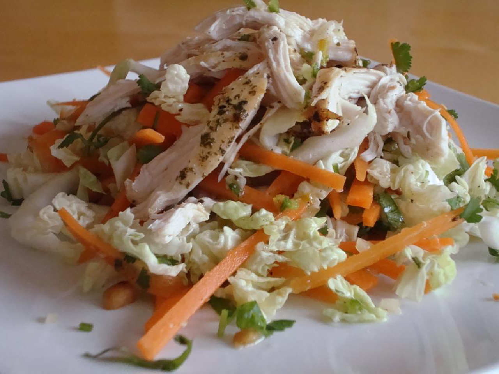

Vietnamese Chicken Salad
All Recipes

Description
This is a very simple-to-make salad with bold flavors. You can serve as a side dish or just have it alone. The
salad
can be refrigerated overnight and still taste good the next day.
Ingredients
- 1 tablespoon finely chopped green chile peppers
- 1 tablespoon rice vinegar
- 2 tablespoons fresh lime juice
- 3 tablespoons Asian fish sauce
- 3 cloves garlic, minced
- 1 tablespoon white sugar
- 1 tablespoon Asian (toasted) sesame oil
- 2 tablespoons vegetable oil
- 1 teaspoon black pepper
- 2 cooked skinless boneless chicken breast halves, shredded
- ½ head cabbage, cored and thinly sliced
- 1 carrot, cut into matchsticks
- ⅓ onion, finely chopped
- ⅓ cup finely chopped dry roasted peanuts
- ⅓ cup chopped fresh cilantro
Steps
-
Stir together the chopped green chiles, rice vinegar, lime juice, fish sauce, garlic, sugar, sesame oil,
vegetable
oil, and black pepper until the mixture is thoroughly combined and the sugar is dissolved.
-
Place the chicken, cabbage, carrot, onion, peanuts, and cilantro in a salad bowl, and toss thoroughly
together
with
tongs. Pour the dressing over the salad and toss again. Serve immediately.
Back to All Recipes